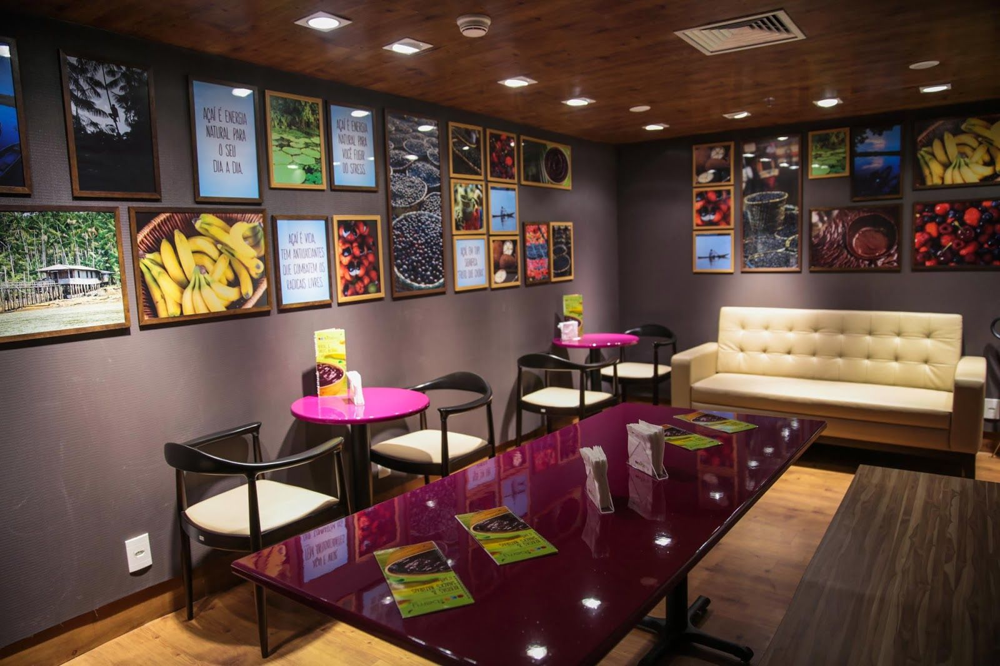

Sobre Nós
Há cerca de quatro anos, em Cabo Frio, uma ideia começou a florescer. Enquanto eu me dedicava ao trabalho como motogirl e trabalhava em uma loja de lanches artesanais, surgiu uma ideia sobre açaí já que é algo que sou apaixonada. Consciente da importância de uma dieta equilibrada, o açaí tornou-se minha opção saudável para satisfazer meu desejo por doces. Desde então, essa delícia tropical tem sido minha inspiração para o meu negócio, proporcionando não apenas prazer ao paladar, mas também nutrientes essenciais para uma vida saudável.
